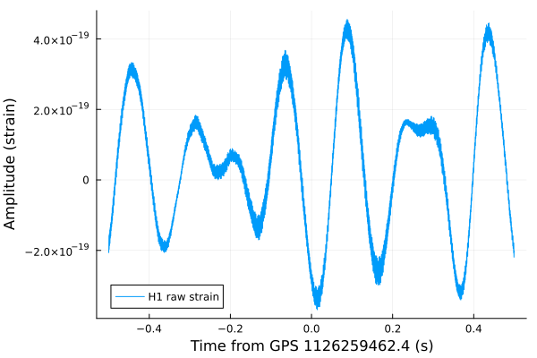
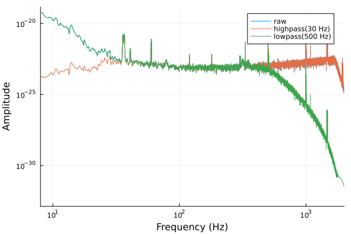
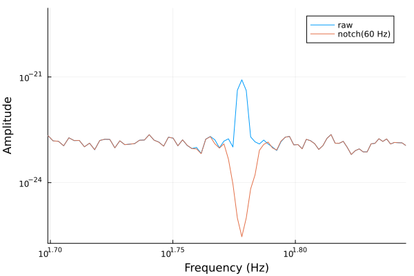
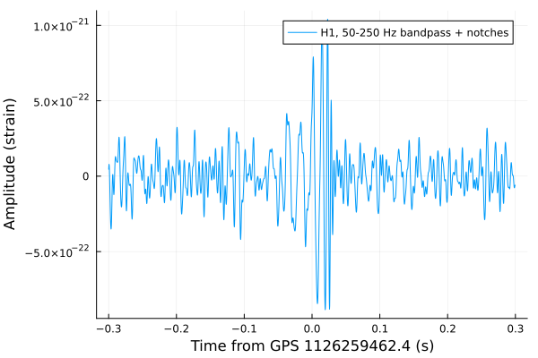
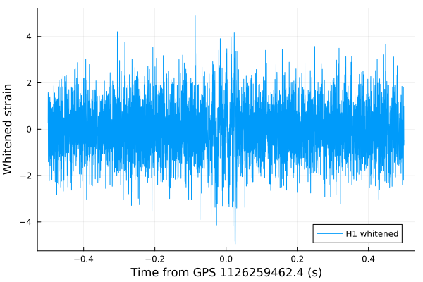
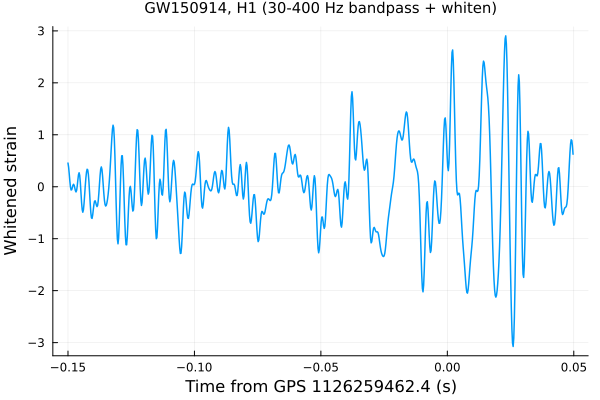

Filtering & Whitening
Real gravitational-wave strain data is, in raw form, dominated by low-frequency seismic and suspension noise – many orders of magnitude louder than any astrophysical signal buried in the band. Before a transient like a binary black hole merger becomes visible by eye, the data needs conditioning: band-limiting filters to cut out noise outside the band of interest, notch filters to remove narrow contaminating spectral lines (mains power and its harmonics), and whitening to flatten the spectrum so no single frequency band dominates the visual scale.
This tutorial walks through bandpass/highpass/lowpass/ notch, then whiten – inverse-spectrum-truncation whitening (see docs/CONVENTIONS.md's "Whitening" section, also on this site under Conventions, for the full algorithm writeup) – and finishes by combining bandpass and whitening to reveal the classic GW150914 "chirp".
using GravitationalWaveData
using Plots
gr()Plots.GRBackend()Fetching real strain data
We use the same standard 4096 s off-source segment covering GW150914 that the rest of this project's tutorials and tests use, fetched live from GWOSC via fetch_open_data (cached locally under ~/.cache/gravitationalwavedata/strain on repeat calls, so re-running this tutorial doesn't re-download the file).
gps_start, gps_end = 1126256640, 1126260736
gps_merger = 1126259462.4 # GW150914 merger GPS time
path = fetch_open_data("H1", gps_start, gps_end)
strain, dq_mask = load_gwosc_strain(path)(TimeSeries{Float64}(16777216 samples, t0=1.12625664e9, dt=0.000244140625, duration=4096.0s, name="strain"), TimeSeries{UInt32}(4096 samples, t0=1.12625664e9, dt=1.0, duration=4096.0s, name="DQmask"))A raw zoom around the merger shows nothing obviously astrophysical: the signal is many orders of magnitude smaller than the low-frequency noise dominating the plot's vertical scale (note the 1e-19-ish amplitude axis – the actual GW150914 strain is close to 1e-21).
raw_rel = collect(times(strain)) .- gps_merger
raw_mask = abs.(raw_rel) .<= 0.5
plot(raw_rel[raw_mask], strain.data[raw_mask];
xlabel="Time from GPS 1126259462.4 (s)", ylabel="Amplitude (strain)", label="H1 raw strain")
Band-limiting and notch filters
bandpass, highpass, lowpass, and notch are all zero-phase Butterworth filters (DSP.digitalfilter + DSP.filtfilt, fixed order=4 by default – see src/GravitationalWaveData/Filtering.jl's header comment for why the order is fixed rather than auto-selected). We work on a 16 s segment centered on the merger, long enough that filtfilt's edge transients don't touch the region we plot.
seg = crop(strain, gps_merger - 8, gps_merger + 8)
seglen = round(Int, 4 * sample_rate(seg)) # 4 s Welch segments for the ASD estimates below16384highpass/lowpass roll off everything below/above a single corner frequency; overlaying their ASDs against the raw segment's shows exactly where each starts cutting:
seg_asd = crop(asd(seg; seglen=seglen), 8.0, nothing) # drop the f=0 bin (breaks log-log axes)
hp_asd = crop(asd(highpass(seg, 30); seglen=seglen), 8.0, nothing)
lp_asd = crop(asd(lowpass(seg, 500); seglen=seglen), 8.0, nothing)
plot(seg_asd; label="raw", xlim=(8, 2000))
plot!(hp_asd; label="highpass(30 Hz)")
plot!(lp_asd; label="lowpass(500 Hz)")
notch instead removes one narrow band – e.g. the 60 Hz US mains line, visible as a sharp spike in the raw ASD and cleanly excised after notching:
notched = notch(seg, 60; bandwidth=2.0)
notched_asd = crop(asd(notched; seglen=seglen), 8.0, nothing)
plot(seg_asd; label="raw", xlim=(50, 70))
plot!(notched_asd; label="notch(60 Hz)")
bandpass combines a high- and a low-pass corner in one filter. Applying bandpass(50, 250) together with notches at the first three 60 Hz mains harmonics – already turns up a spike right at the merger time, in an otherwise unremarkable-looking segment:
conditioned = notch(notch(notch(seg, 60.0), 120.0), 180.0)
conditioned = bandpass(conditioned, 50.0, 250.0)
cond_zoom = crop(conditioned, gps_merger - 0.3, gps_merger + 0.3)
cond_rel = collect(times(cond_zoom)) .- gps_merger
plot(cond_rel, cond_zoom.data;
xlabel="Time from GPS 1126259462.4 (s)", ylabel="Amplitude (strain)",
label="H1, 50-250 Hz bandpass + notches")
Whitening
Filtering alone only band-limits; it doesn't equalize the remaining power across frequency, so low-frequency noise inside the passband can still dominate the eye's attention. whiten instead performs inverse spectrum truncation against a supplied PSD/ASD: design a time-domain FIR filter approximating 1/ASD(f), taper/truncate it to fduration seconds, and convolve it with the data via the overlap-save method – never a naive FFT/divide/inverse-FFT, which would ring badly at segment edges. See docs/CONVENTIONS.md's "Whitening" section for the full algorithm writeup, and its Validation section for the measured agreement with a reference implementation.
We estimate the ASD from the very same 4096 s segment we're about to whiten – in a real analysis you'd typically use a separate off-source stretch, but GW150914's own signal is far too short (a fraction of a second) to meaningfully bias a multi-minute median-Welch estimate:
asd_est = asd(strain; seglen=round(Int, 4 * sample_rate(strain)))
white = whiten(strain, asd_est; highpass=20.0)
white_rel = collect(times(strain)) .- gps_merger
white_mask = abs.(white_rel) .<= 0.5
plot(white_rel[white_mask], white.data[white_mask];
xlabel="Time from GPS 1126259462.4 (s)", ylabel="Whitened strain", label="H1 whitened")
On stationary Gaussian noise, whiten normalizes to zero mean and unit variance – notice the vertical scale is now O(1) rather than O(1e-19). Per docs/CONVENTIONS.md's documented caveat, the first/last fduration/2 seconds (default fduration=2.0, so 1 s here) of the full whitened series are corrupted by the FIR filter's settle-in transient; since the 1 s window we plotted above sits deep in the interior of the 4096 s segment we whitened, that doesn't affect anything shown here, but it is worth cropping off explicitly whenever a whitened segment's own start/end is close to data you care about.
Combining bandpass and whitening: the GW150914 chirp
Whitening alone already reveals broadband transients, but combining it with a bandpass around the detector's most sensitive band sharpens the signal further – the combination behind the canonical "whitened GW150914" figure:
bp_white = bandpass(white, 30.0, 400.0)
chirp_zoom = crop(bp_white, gps_merger - 0.15, gps_merger + 0.05)
chirp_rel = collect(times(chirp_zoom)) .- gps_merger
plot(chirp_rel, chirp_zoom.data;
xlabel="Time from GPS 1126259462.4 (s)", ylabel="Whitened strain",
title="GW150914, H1 (30-400 Hz bandpass + whiten)", legend=false, linewidth=1.5)
The characteristic gravitational-wave "chirp" – rising amplitude and frequency as the two black holes spiral together – is now visible by eye, peaking right around the merger GPS time (1126259462.4), in data that looked completely unremarkable in the very first plot above. This is the same idea behind Figure 1 of Abbott et al. (2016), the LIGO-Virgo discovery paper for GW150914; the 12_gw150914_capstone tutorial builds on exactly this filtering/whitening pipeline (adding a Q-transform) to reproduce that figure more fully.
This page was generated using Literate.jl.